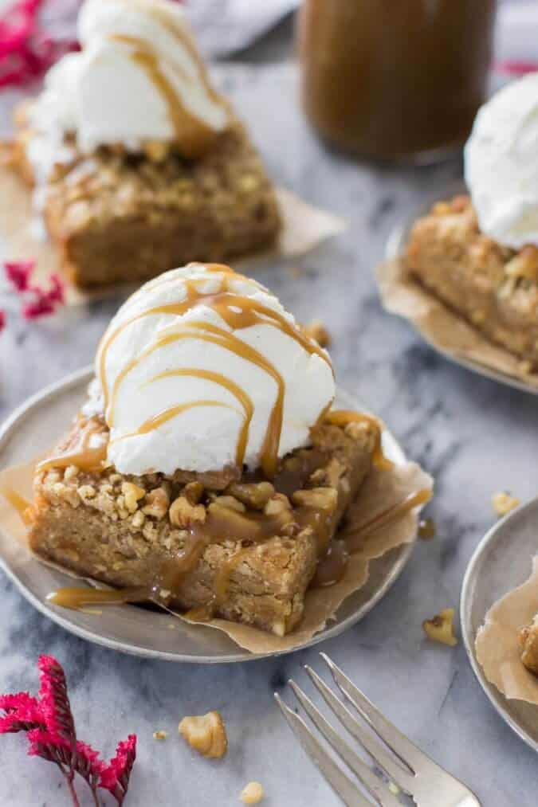

Browned Butter Blondie with Walnut Crumble Recipe

Description
During the summertime, I feel mostly limited to no-bake recipes and fruity desserts, but right now I don't feel so bad about warming up the kitchen with the oven (especially since Zach doesn't believe the heat should be turned on until January!), and fall flavors are so much fun to bake with.
I've captured some of the best flavors of fall here: browned butter, brown sugar & walnut crumbles, and a hint of maple, all topped off with vanilla bean ice cream and homemade salted caramel sauce.
Ingredients
- 12 tbsp Unsalted Butter
- 2 cups All-Purpose Flour
- ½ tsp Baking Powder
- ½ tsp Salt
- 1 cup + 3 tbsp Brown Sugar, tightly packed
- ½ cup Sugar
- ⅓ cup Maple Syrup
- 2 Eggs + 1 Egg Yolk
- ½ tsp Vanilla Extract
- ½ cup Chopped Walnuts
Steps
- Preheat oven to 350F and grease and flour a 9x9 pan.
- Cut your butter into Tablespoon-sized pieces and place in a medium-sized saucepan. Melt over medium-low heat.
- Once butter has melted, increase heat to just above medium heat.
- Swirl and scrape the sides of the pan frequently with a wooden spoon or heatproof spatula - the butter will bubble and pop. Once the bubbling/popping slows, the butter will begin to turn brown. Watch it carefully, and once it begins to brown and you smell the nutty aroma of browned butter, remove from heat and pour into a large, heatproof bowl.
- Allow butter to cool at least 15 minutes. Meanwhile, prepare your dry ingredients.
- In a medium-sized bowl, whisk together flour, baking powder, and salt. Set aside.
- 1 ¾ cup All-Purpose Flour
- ½ tsp Baking Powder
- 1 tsp Salt
- Once butter has cooled at least 15 minutes, stir in sugars and maple syrup. Stir well.
- ½ cup Sugar
- ⅓ cup Maple Syrup
- 1 cup Brown Sugar, tightly packed
- Add eggs, egg yolk, and vanilla extract. Stir until well-combined.
- 2 Eggs
- 1 Egg Yolk
- ½ tsp Vanilla Extract
- Gradually stir your dry ingredients into your wet and pour evenly into your prepared pan.
- Prepare your walnut crumble by pulsing flour and brown sugar in small food processor.
- ¼ cup All Purpose Flour
- 3 tbsp Brown Sugar
- Add butter, and pulse just until coarse crumbs form.
- Add walnuts, pulse once again, briefly, and then turn food processor off and carefully remove blade.
- Sprinkle the walnut topping evenly over the prepared blondie batter.
- Bake on 350F (177C) for 35 minutes. Serve warm, preferably topped with ice cream and salted caramel sauce.